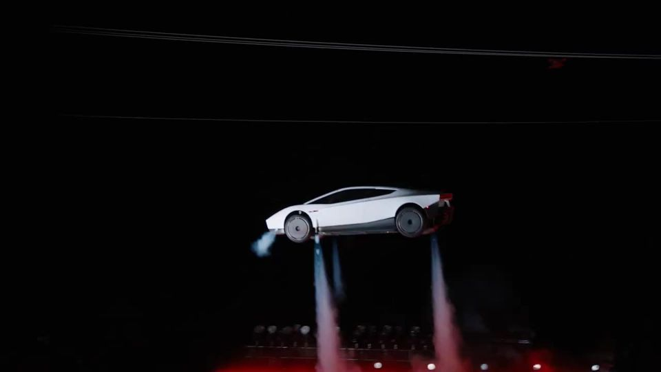
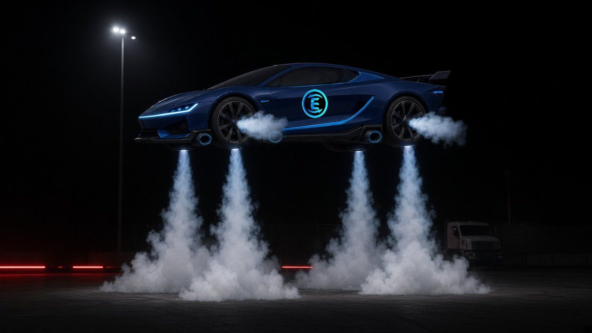
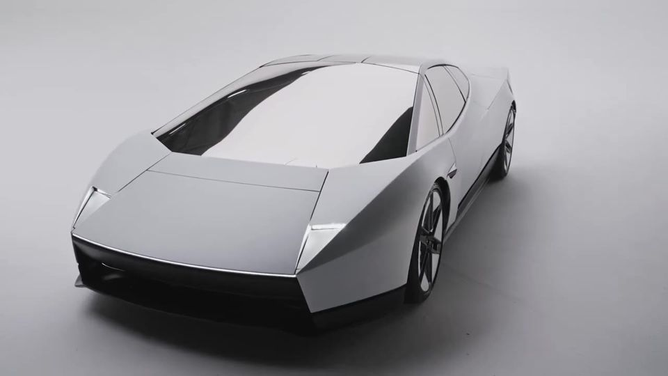
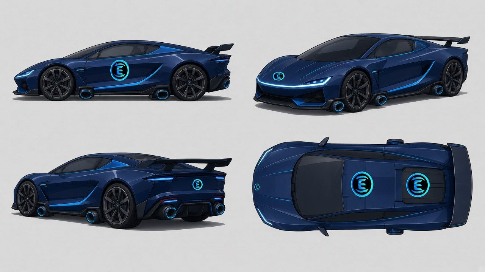
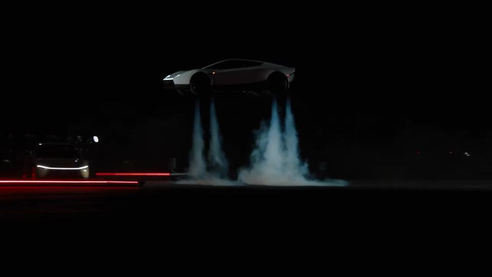
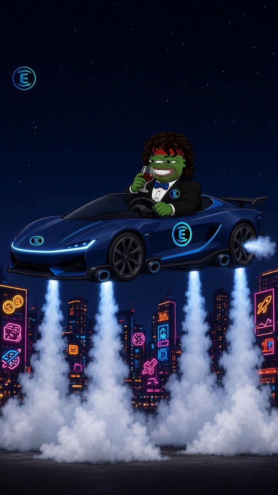
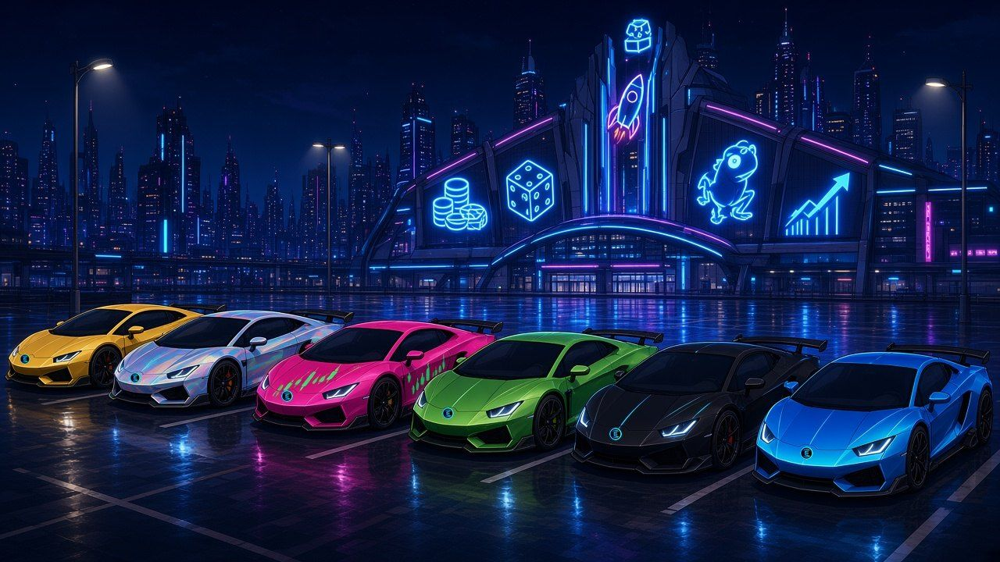
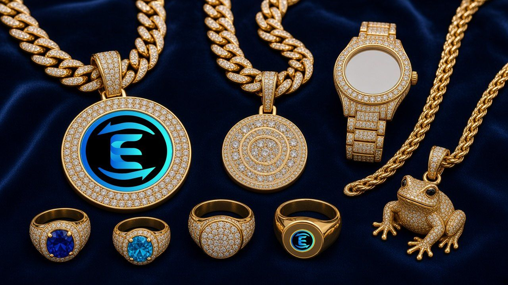

Roadster v2: “Tesla compressed-air” flying car + degen flex props
Equalizer Pepe · 22 Oct 2026 (AEDT) · all candidates, need Blake sign-off · GenerateImage + real
brand/icon.png composited in post (LOGO LAW)Reference clip (Blake's brief: "any flying cars need to look like the Tesla compressed air from Elon's clip")
Elon, 16 Oct 2026: x.com/elonmusk/status/2110913107094606330, “Turns out the future does have flying cars” (15 s)
Also: Tesla “Do a kickflip!” · Tesla design reveal (SR-71/F-35 inspired)
Elon, 16 Oct 2026: x.com/elonmusk/status/2110913107094606330, “Turns out the future does have flying cars” (15 s)
Also: Tesla “Do a kickflip!” · Tesla design reveal (SR-71/F-35 inspired)
What makes the clip look like that
- Silhouette: very low, wide wedge coupe. The hood is faceted like a stealth jet, the nose is a knife edge with a thin full-width light bar, the glass canopy sits well back, and the rear wing has a light bar under it.
- Thrusters: 10 cold-gas nozzles fed by two ~600 L air tanks. Lift jets fire straight down near the 4 corners, attitude puffs fire sideways from the flanks, and the main thrusters sit in the rear.
- Plume: no flame. The jets are narrow, straight, pale blue-white translucent columns that bloom into thick white vapor on the tarmac. A huge white smoke bank follows the landing.
- Motion: violent 1–2 s hops, not a floaty hover. The car pops up, rolls 360° over a line of parked Teslas, lands level on a final down-blast, then drives off into the smoke.
- Sound: a continuous loud broadband hiss/roar from the air blasts and the crowd. Read from the audio levels, not checked by ear.
- Lighting: night shoot. Black sky, one or two hard overhead floodlights, cool white rim light, glowing vapor, red ground strips. That is why it "almost looks AI".
Side by side: clip vs ours






1 · New hero car turnaround
Real icon on the nose, door, rear and roof discs. Raw AI sheet: sheet.jpg · Old car it replaces: old roadster sheet (superseded)


2 · Thruster-firing hover
Raw: hover.jpg

3 · EQ Pepe driving it + flex at the casino (9:16)


4 · Degen flex props

“wen Lambo” lot. The AI kept drawing tiny shield badges on the noses, so each one is covered with the real Equalizer disc. Raw (do not use)


Cuban links, iced Equalizer pendant (real icon), pinky rings with the Equalizer signet, iced watch, frog charm. Raw

Honest verdict / known issues
- Closest to the clip: the thruster look and lighting in the hover pose. Straight pale cold-gas columns into white vapor, black night pad, floodlight, red strips: that is the clip's vibe.
- Car shape: about 60% there. It has the Tesla cues (low wedge, nose light bar, set-back dark canopy, wing, row of 4 rear nozzles), but it reads more like a generic modern supercar. The bold triangular hood faceting from Tesla's studio reveal didn't stick even after a dedicated retry. The nozzles look like round exhaust pipes, not flush vents. No Tesla badges or wordmarks anywhere.
- Pepe roadster plate: on-model face, curls, headband, stubble, bow tie and wine. He is a bit small and head-heavy, and the car hides most of the muscular build.
- Pepe flex plate: strongly on-model. One background slot sign has garbled pseudo-letters (top right) and the table edge has an AI E-like emblem (bottom left). Paint those out before production.
- Lambo lot: shapes still read as Lamborghini-style wedges (parody OK, no marks after the logo pass). Jewelry sheet is more photoreal than our cel style.
- All of these are stills. The clip's motion (hop → barrel roll → landing blast) still needs a Kling i2v test from these plates.
Tesla frames shown small, for comparison only. They are never used in show frames. Prompts: eq-pepe-show/prompts/roadster-tesla.md, props-degen.md.